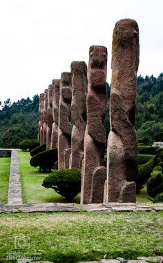
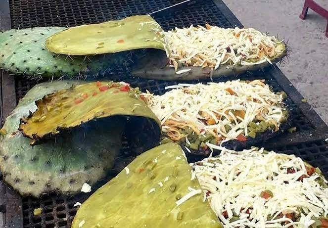
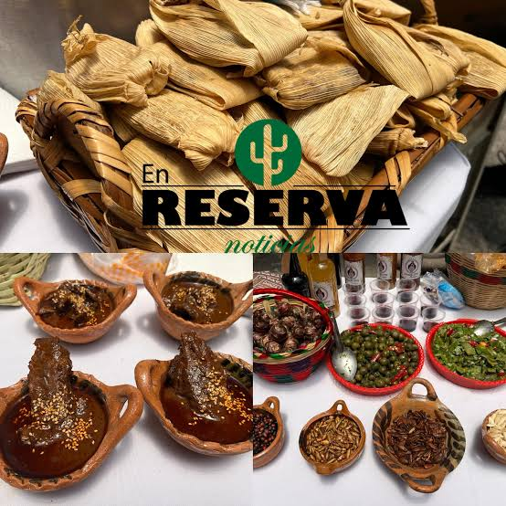
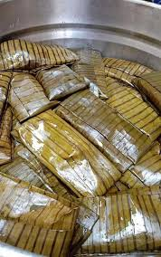
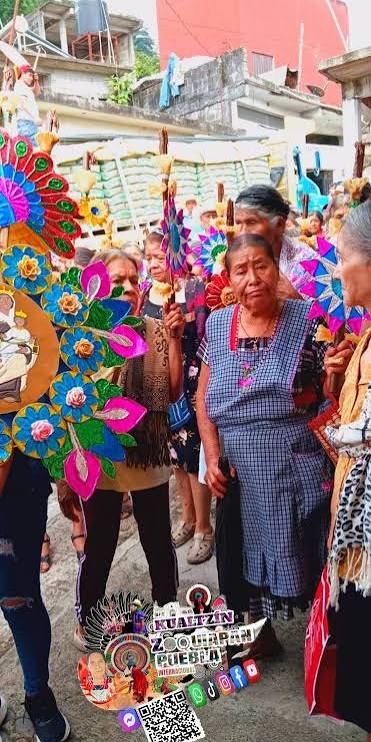
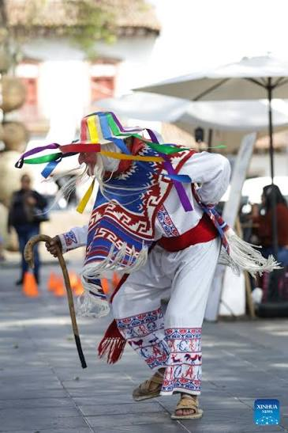
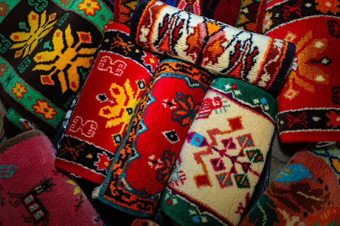

Bienvenido al proyecto Otomí
Aquí vas la cultura otomí: sus lugares, su comida y sus costumbres.
Lugares para visitar
Centro Ceremonial Otomí
Centro Ceremonial Otomí es un recinto cultural y sagrado de 45 a 50 hectáreas ubicado en el municipio de Temoaya, Estado de México, a unos 37 km de Toluca y aproximadamente a una hora y media de la Ciudad de México. Fue inaugurado en 1980 por iniciativa del gobierno estatal (durante la gestión de Jorge Jiménez Cantú) y diseñado por los arquitectos Iker Larrauri y Carlos Obregón con el propósito de preservar las tradiciones, rituales e identidad de la comunidad otomí (ñöhñö).


Comida tradicional
Nopales en penca
Rellenos de cebolla, ajo, cilantro, jitomate y chile, cocinados lentamente dentro de una penca de nopal.

Mole de flor de quiote y mole de conejo
Guisados tradicionales de herencia prehispánica.

Tamales agrios
Elaborados con masa de maíz azul de fermentación lenta, anís y haba seca, muy tradicionales para el Día de Muertos.

Tradiciones
El Padrón de Ceras y Mayordomías
Organización comunitaria y religiosa para festejar al santo patrono, donde se traspasan cargos de responsabilidad social y espiritual.

Danza de los viejitos
Los jóvenes se visten como ancianos con máscaras de madera y bailan con violín y tambor. Lo hacen para mostrar respeto a las personas mayores y todo lo que saben.

Artesanías
Desde pequeños aprenden a tejer, bordar y hacer cerámica. Las figuras que hacen cuentan cosas de su pueblo, como el sol, la luna o la lluvia. Cada pieza tiene su significado.
